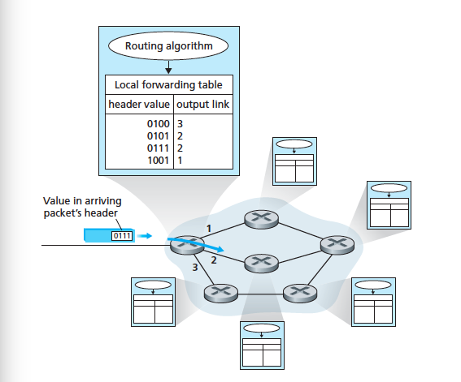

October 13th Notes
The Network Layer
- Forwarding involves the transfer of a packet from an incoming link to an outgoing link within a single router
- Routing refers to the network-wide process that determines the end-to-end paths that packets take from source to destination
- Routing Algorithms are responsible for determining good paths from senders to receivers
- Link State
- Distance Vector
- Forwarding Table is used to store a value in the arriving packet's header, that is used to indicate the router's outgoing link interface to which that packet is forwarded

- Connection Setup is when the routers along a chosen path from source to destination handshake with each other before network-layer data packets flow
- Network Service Model defines the characteristics of end-to-end transport of packets between sending and receiving end systems
- Network Layer Services:
- Guaranteed delivery: Makes sure that the packet arrives at its destination
- Guaranteed delivery with bounded delay: Makes sure a packet is delivered within a specified host-to-host delay bound
- In-order packet delivery: Guarantees that the packet arrives at the destination in order
- Guaranteed minimal bandwidth: Emulates the behaviour of a transmission link of a specified bit rate
- Guaranteed maximum jitter: Guarantees the amount of time between the transmission of two successive packets at the sender is equal to the amount oftime between the receipt at the destination
- Security service: Using a secret session key known only by a source and destination host which can be used for the purpose of encryption
- ATM Service Models
- Constant Bit Rate: The goal is to provide a flow of packets with a virtual pipe whose properties are the same as if a dedicated fixed-bandwidth transmission link exisited between the sending and receiving hosts
- Available Bit Rate: